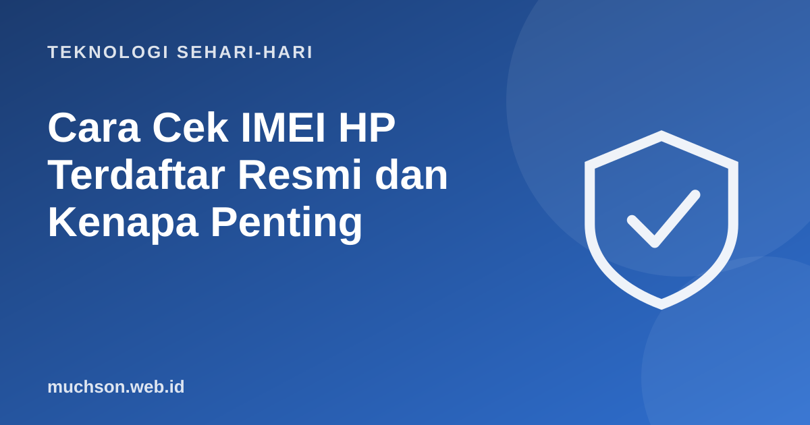

Beranda › Artikel › Teknologi Sehari-hari
Teknologi Sehari-hariCara Cek IMEI HP Terdaftar Resmi dan Kenapa Penting
Sejak 15 September 2020, ponsel dengan IMEI yang tidak terdaftar di Indonesia diblokir dari jaringan seluler. Artinya HP masih menyala, tetapi tidak bisa menelepon atau memakai data seluler dengan kartu operator Indonesia. Bila Anda membeli HP, terutama bekas atau dari luar negeri, memeriksa IMEI adalah langkah wajib.

Apa itu IMEI?
IMEI (International Mobile Equipment Identity) adalah nomor 15 digit yang menjadi identitas unik setiap perangkat seluler, seperti nomor rangka pada kendaraan. HP dengan dua slot SIM biasanya punya dua IMEI. Pemerintah memakai IMEI untuk memastikan perangkat yang beredar adalah perangkat resmi, sekaligus menekan peredaran ponsel ilegal.
Cara melihat nomor IMEI
- Ketik *#06# di aplikasi telepon. Nomor IMEI langsung muncul.
- Pengaturan HP: biasanya di Tentang ponsel (Android) atau Pengaturan → Umum → Mengenai (iPhone).
- Dus atau kotak HP: tercetak pada stiker.
- Laci SIM pada beberapa model.
Cocokkan IMEI di layar (*#06#) dengan IMEI di dus. Bila berbeda, HP mungkin bukan pasangan dusnya, atau pernah diperbaiki dengan komponen lain. Tanyakan ke penjual.
Cara mengecek status pendaftaran IMEI
Dulu masyarakat bisa mengecek di situs Kementerian Perindustrian (imei.kemenperin.go.id). Pemberitaan pada 2025 menyebut layanan cek publik di situs itu tidak lagi tersedia, dan masyarakat diarahkan ke layanan cek IMEI di situs Bea Cukai. Karena layanan bisa berubah, gunakan langkah umum berikut dan selalu pastikan alamat situsnya resmi (berakhiran .go.id):
- Siapkan nomor IMEI 15 digit dari *#06#.
- Buka layanan cek IMEI resmi pemerintah (saat ini melalui situs Bea Cukai di beacukai.go.id).
- Masukkan nomor IMEI dan ikuti verifikasi.
- Baca hasilnya: terdaftar atau tidak terdaftar.
Jangan mengecek IMEI di situs atau aplikasi pihak ketiga yang meminta data pribadi atau pembayaran. Layanan cek IMEI pemerintah tidak memungut biaya.
HP dari luar negeri
HP yang dibeli atau dibawa dari luar negeri perlu didaftarkan IMEI-nya agar bisa dipakai dengan kartu operator Indonesia. Pendaftaran dilakukan melalui prosedur Bea Cukai, baik saat kedatangan di bandara maupun secara daring sesuai ketentuan yang berlaku, dan bisa dikenakan bea masuk serta pajak tergantung nilai barang. Aturan rinci dapat berubah, jadi periksa situs Bea Cukai sebelum bepergian.
Daftar cek membeli HP bekas
Tanya jawab
Bagaimana cara cek IMEI HP?
Apakah imei.kemenperin.go.id masih bisa dipakai?
Apa akibat IMEI tidak terdaftar?
Bagaimana mendaftarkan IMEI HP dari luar negeri?
Sumber dan bacaan lanjut
- Kompas TV: cara cek IMEI HP terdaftar atau tidak
- Direktorat Jenderal Bea dan Cukai
- CNBC Indonesia: blokir IMEI dan cara cek